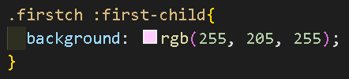
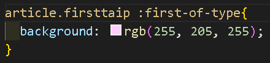
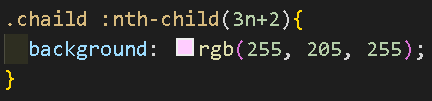
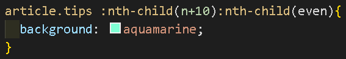
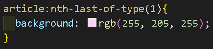
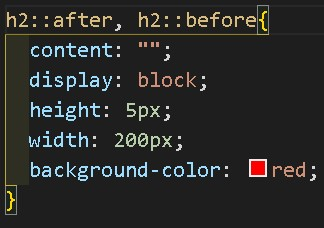

Pseudoclases
Son estilos contextuales, imitan a las clases, permiten seleccionar elementos según su estado o alguna condición. No pueden sobre escribir una clase.Se indican con dos puntos (:).
:hover{} aplica un estilo a todo el documento.
h1:hover{} aplica un estilo a la etiqueta h1.
h1 :hover{} aplica un estilo a los hijos de h1.
las etiquetas como br cuentan como hijos, tómalo en cuenta cuando apliques estilos a los últimos hijos.


La propiedad transition se usa para animaciones de páginas, hace que los cambios repentinos de estilos, se hagan mediante una transición tenue (ejemplo: transition: all #s;).
Su valor all indica que aplique transiciones a todas las propiedades.
Su valor numérico indica los segundos que tardará en completar la transición.

Si se usan las 3 últimas pseudoclases en un elemento, preferentemente debe de ser usado en este orden para que no afecte el estilo en cascada:
:visited
:hover
:active
:visited
:hover
:active

Ocultar (desaparecer)
La URL cambia al activar la pseudoclase, aumentando al final el elemento al que se le aplica el estilo manteniendo el target activo:
http://127.0.0.1:5500/Paginas/Prueba7.html#mostrar
La URL cambia al activar la pseudoclase, aumentando al final el elemento al que se le aplica el estilo manteniendo el target activo:
http://127.0.0.1:5500/Paginas/Prueba7.html#mostrar
En este caso se activará un fondo azulado a todos los hijos de cada article excepto a esta sección cuya clase es "not".

En este caso, las etiquetas hijas de cada etiqueta "articulo" (como las letras tipo bold o itálica) obtienen un fondo azulado al pasar el puntero del mouse por encima, excepto en el artículo con la clase not.

Esto tiene dos formas de interpretarse:
h2 :first-child{} (descendiente) esta selección se hace desde el padre, aplica el estilo al primer hijo de cada h2.
h3:first-child{} aplica el estilo a cada h3 que sea primer hijo. Esto lo explicaré en dos reglas:
-El h3 debe ser el primero de sus hermanos para recibir el estilo.
-Aunque el h3 sea el primer h de nivel 3, no se le aplicará el estilo si hay un hermano de otro tipo antes que él, quitandole la primogenitura.

:last-child aplica un estilo al último hijo de un elemento, igual que la pseudoclase anterior, aplica el estilo dependiendo de si se coloca con descendencia o no.
div :last-child{} (descendiente) esta selección se hace desde el padre, aplica el estilo al último hijo de cada div.
div:last-child{} aplica el estilo a cada div siempre y cuando ese div sea el último hijo.
No se suele usar con selectores (#id o .class) sin acompañamiento de etiquetas.
section :first-of-type{} (descendiente) esta selección se hace desde el padre, aplica el estilo a todos los primogénitos de cada section, es decir, el aplicará el estilo al primer img, div, b, i, etcetera.
b:first-of-type{} aplica el estilo al primer b hijo de cada contenido padre.

Los type no se suelen usar con los selectores (#ides o .classes) sin acompañamento de etiquetas.
section :last-of-type{} (descendiente) esta selección se hace desde el padre, aplica el estilo a todos los últimos hijos de cada section, es decir, el aplicará el estilo al último img, div, b, i, etcétera.
b:last-of-type{} aplica el estilo al último b de cada contenido.

:nth-last-child() aplica un estilo al hijo según su posición desde el último al primero.
:nth-child(even) o :nth-last-child(even) aplica un estilo a todos los hijos pares del inicio al final o viceversa respectivamente.
:nth-child(odd) o :nth-last-child(odd) aplica un estilo a todos los hijos impares del inicio al final o viceversa respectivamente.
:nth-child(#) o :nth-last-child(#) aplica un estilo a los hijos que se encuentren en la posición #, es decir, si # = 5 entonces cuenta desde el inicio o desde el final respectivamente y aplica el estilo al quinto hijo del elemento.
:nth-child(#n) o :nth-last-child(#n) este es un múltiplo, aplica un estilo a los hijos que se encuentren en la posición #*n (n se inicializa en 0), es decir, si # = 3 entonces cuenta desde el inicio o desde el final respectivamente y aplica el estilo a los tercer (3*1), sexto (3*2), noveno(3*3), etc., hijos del elemento.
:nth-child(#n+#) o :nth-last-child(#n+#) este es un múltiplo, aplica un estilo a los hijos que se encuentren en la posición #*n+# o #*n-# (n se inicializa en 0), es decir, si el primer # = 2 y el segundo es positivo y vale # = 3 entonces cuenta desde el inicio o desde el final respectivamente y aplica el estilo a los tercer (2*0+3), quinto (2*1+3), séptimo (2*2+3), etc., hijos del elemento.

Las etiquetas br cuentan como hijos, solo que al ser un salto de línea no se ve su estilo.
O n + 3 que selecciona todos los hijos a partir de la tercera posición.
O :nth-child(n+5):nth-child(even) que selecciona a partir del quinto hijo todos los hijos pares .
O :nth-child(odd):nth-child(3n) que selecciona todos los hijos impares que sean múltiplos de 3.
Se recomienda encontrar primero los hijos a los que se desea aplicar el estilo.
La pseudoclase sin descendencia (ejemplo: .pe:nth...) aplican los estilos en este ejemplo a los hermanos de los elementos con la clase="pe".
La pseudoclase con descendencia (ejemplo: .pe :nth...) aplican los estilos en este ejemplo a los hijos de los elementos con la clase="pe". 
:nth-last-of-type() hace su selección al revés, desde el ultimo hijo hasta el primero según su posición y dependiendo de su etiqueta (p, div, span, etc.).

::before selector o pseudoelemento que coloca contenido antes de un elemento.
(Los pseudoelementos por default tienen la propiedad display: inline).
Con la propiedad content se coloca texto, ejemplo:
h1::after, h1::before{ content: "<>" }
colocará los símbolos '<>' antes y después de cada h1.
